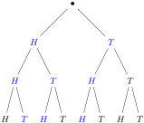

Section 9.2 Multiplication Rule
In this section we look at how to count a process that has several steps. We start with an example.
Toss a coin three times. How many ways can you get exactly two heads in the three tosses?
First toss: H or T
Second toss: H or T
Third toss: H or T
If we think about what happens after the first toss, we have H or T. For each of those outcomes, we get H or T on the second toss, so we now have 4 outcomes: HH, HT, TH, TT
With the third toss, each of our four outcomes could end with H or T, giving us 8 outcomes: HHH, HTH, THH, TTH, HHT, HTT, THT, TTT.
Out of these 8 possible outcomes, there are 3 outcomes with exactly 2 heads: HTH, THH, HHT.
We can also see the possibilies using a possibility tree, where the first (top) level represents the first toss, the second level, the second toss, and the third level, the third toss. The blue “paths” show the outcomes with exactly two Heads.

In Example 9.2.1, we saw that each toss doubled the number of outcomes from the previous toss. For example, if we tossed the coin 4 times, we would have \(2^4=16\) outcomes. We are using the multiplication rule to determine the number of outcomes.
Multiplication Rule.
Supose we have a process with \(k\) steps, where
- the first step can be done in \(n_1\) ways;
- the second step can be done in \(n_2\) ways;
- the \(k^{th}\) step can be done in \(n_k\) ways.
Then the total operation can be done in \(n_1\cdot n_2\cdots n_k\) ways.
Activity 9.2.1.
Suppose a restaurant offers 3 appetizers, 3 entrees, and 2 desserts.
(a)
Draw a possibility tree for how many different meals (one appetizer, one entree, and one dessert) you can create.
(b)
How many total meals can you create?
Example 9.2.3. Multiplication Rule: License Plates.
Find the number of license plates that can be made if each one consists of two letters from A through E, followed by four digits from 1 through 9.
There are 5 choices for the letters: A, B, C, D, E.
There are 9 choices for the digits: 1, 2, 3, 4, 5, 6, 7, 8, 9.
First choose a letter, then another letter, then choose each of the numbers. We can use the multiplication rule since we can choose each character as a process.
Thus, we have \(5\cdot 5\cdot 9\cdot 9\cdot 9\cdot 9=164025\) license plates.
Now, suppose you cannot repeat a number in any one license plate. How many license plates can we make?
When choosing the numbers, first we have 9 choices, then 8, since we can't choose the same number as the first digit, etc.
The total number of license plates if we can't repeat a number is \(5\cdot 5\cdot 9\cdot 8\cdot 7\cdot 6=75600\text{.}\)
Activity 9.2.2.
Suppose a license plate consists of 3 letters followed by 2 digits.
(a)
How many license plates can you make?
(b)
How many license plates can you make if you cannot repeat a letter or number?
A string of length \(n\) over \(s\) is a list of \(n\) characters where the characters come from set \(S\text{.}\) A binary string or bit string is a string with \(S=\{0, 1\}\text{.}\) The null string is the string of length 0, denoted \(\varepsilon\text{.}\)
Example 9.2.4. Multiplication Rule: Strings.
Find the number of bit strings of length 5.
Answer 1.\(2\cdot 2\cdot 2\cdot 2\cdot 2=32\)
Find the number of “words” of length 4. These are just strings where \(S\) is the alphabet.
Answer 2.\(26^{4}\)
Find the number of strings of length 7, where \(S=\{a, b, c, d, 1, 2, 3, 4\}\text{.}\)
Answer 3.\(8^{7}\)
Definition 9.2.5.
A permutation of a set \(S\) is an ordering of the elements of \(S\) in a row.
Example 9.2.6. Permutations of a Set.
Let \(S=\{a, b, c\}\text{.}\) Then a permutation of \(S\) is a list of elements in \(S\text{.}\) List all the permutations of \(S\text{.}\)
Since we have 3 choices for our first element, then 2 choices for the second, and 1 for the last, there are \((3)(2)(1)=6\) permutations.
The permutations are abc, acb, bca, bac, cab, cba.
How many permutations are there of the set \(S=\{a, b, c, d\}\text{?}\)
Answer.\(4\cdot 3\cdot 2\cdot 1=24\)
Activity 9.2.3.
List all the permutations of \(S=\{1, 2, 3\}\text{.}\)
Hint.
There are 6.
Activity 9.2.4.
How many permutations are there of a set with 5 elements?
Activity 9.2.5.
How many permutations are there of a set with \(n\) elements?
Activity 9.2.5 gives us a formula for finding the number of permutations of a set with \(n\) elements.
Theorem 9.2.7.
The number of permutations of a set with \(n\) elements is \(n\) factorial, \(n!\text{.}\)
Definition 9.2.8.
An \(r\)-permutation of a set \(S\) is an ordered selection of \(r\) elements taken from the \(n\) elements of \(S\) in a row. We use the notation \(P(n, r)\) for the number of \(r\)-permutations from a set of \(n\) elements.
Example 9.2.9. \(r\)-Permutations of a Set.
Let \(S=\{a, b, c, d, e\}\text{.}\) Then a 3-permutation of \(S\) is a list of 3 (non-repeating) elements from \(S\text{.}\) For example, ace, dbe, bda are all 3-permutations.
Find the number of 3-permutations of \(S\text{,}\) \(P(5, 3)\text{.}\)
We have 5 choices for the first letter, 4 choices for the second, and 3 choices for the last. Thus, \(P(5, 3)=5\cdot 4\cdot 3=60\text{.}\)
How many 4-permutations are there of the standard English alphabet?
Answer.\(26\cdot 25\cdot 24\cdot 23\)
Activity 9.2.6.
How many 2-permutations are there of \(S=\{1, 2, 3\}\text{?}\)
Activity 9.2.7.
How many 3-permutations are there of \(S=\{1, 2, 3, 4, 5\}\text{?}\)
Hint.
Think of finding a way to count them using the multiplication rule rather than writing them all down.
Activity 9.2.8.
Try to find a general formula for counting all \(r\)-permutations in a set of \(n\) elements.
Activity 9.2.8 gives us a formula for finding the number of \(r\)-permutations of a set with \(n\) elements.
Theorem 9.2.10.
The number of \(r\)-permutations of a set with \(n\) elements is
\begin{equation*}
P(n, r)=n\cdot (n-1)\cdots (n-r+1),
\end{equation*}
which is often easier to calculate using
\begin{equation*}
P(n, r)=\frac{n!}{(n-r)!}.
\end{equation*}
Activity 9.2.9.
Find \(P(10, 8)\text{.}\)
Example 9.2.11. Finding Four-Digit Integers.
How many odd integers are there from 1000 to 9999?
The number is a string of 4 digits. The first digit cannot be 0, so there are 9 choices: 1 through 9. The second and third digits can be anything from 0 to 9, so there are 10 choices for each. The last digit must be odd, so the only choices are 1, 3, 5, 7, 9.
Thus, there are \((9)(10)(10)(5)=4500\) odd numbers.
How many integers are there from 1000 to 9999 that have distict digits?
The first digit cannot be 0, so there are 9 choices: 1 through 9. The second digit can be anything from 0 to 9, except for whatever the first digit is, so there are 9 choices. Similarly, there are 8 choices for the third digit, and 7 for the last digit.
Thus, there are \((9)(9)(8)(7)=4536\) numbers with distinct digits.
Reading Questions Check Your Understanding
1.
Toss a coin 4 times. How many ways are there to get exactly 1 Head?
2.
Toss a coin 4 times. How many ways are there to get exactly 2 Heads?
3.
Toss a coin 4 times. How many ways are there to get 0 Heads?
4.
How many 3 digit numbers begin with 1 or 2 and end with 2, 3, or 4?
5.
How many 3 digit numbers are divisible by 5?
6.
Calculate the number of permutations of a set with 6 elements.
7.
Calculate \(P(7, 4)\text{.}\)
8.
Calculate \(P(7, 2)\text{.}\)
Exercises Exercises
1.
A bag contains two green balls (labeled \(G_1\) and \(G_2\)) and one purple ball. A second bag contains one green ball and two purple balls (labeled \(P_1\) and \(P_2\)). Suppose the following experiment is performed: One of the two bags is chosen at random. Next a ball is randomly chosen from the bag. Then a second ball is chosen from the same bag without replacing the first ball.
- Construct the possibility tree showing all possible outcomes of the experiment.
- What is the total number of outcomes in this experiment?
- What is the probability that two green balls are chosen?
- What is the probability that two balls of different colors are chosen?
2.
A person buying a computer system is offered a choice of three models of the basic unit, two models of the keyboard, and two models of printer. How many distinct systems can be purchased?
3.
Recall that a bit string is a finite sequence of 0’s and 1’s.
- How many bit strings have length 8?
- How many bit strings have length 8 and begin with 3 0’s?
- How many bit strings have length 8 and begin and end with a 1?
4.
A coin is tossed four times. Each time the result \(H\) for heads or \(T\) for tails is recorded. Assume heads and tails are equally likely on each toss.
- How many distinct outcomes are possible?
- What is the probability that exactly two heads occur?
- What is the probability that exactly one head occurs?
5.
Suppose a license plate consists of four letters followed by three digits.
- How many different license plates are possible?
- How many license plates could begin with and \(A\) and end with 0?
- How many license plates could begin with \(CATS\text{?}\)
- How many license plates are possible if you cannot repeat a letter or number (all the letters and numbers are distinct)?
- How many license plates could begin with \(IF\) and have no repeated letters or numbers?
6.
Consider all two digit integers 10-99.
- How many integers are there from 10 through 99?
- How many odd integers are there from 10 through 99?
- How many integers from 10 through 99 have distinct digits?
- How many odd integers from 10 through 99 have distinct digits?
- What is the probability that a randomly chosen two-digit number has distinct digits? has distinct digits and is odd?
7.
We want to count the number of possible functions from a finite set to a finite set. You may need to recall the definition of a function, Definition 7.1.1.
- How many functions are there from a set with three elements to a set with four elements?
- How many functions are there from a set with five elements to a set with two elements?
- How many functions are there from a set with \(m\) elements to a set with \(n\) elements, where \(m\) and \(n\) are positive integers?
8.
We consider various arrangements of the letters in the word \(ALGORITHM\text{.}\)
- How many ways can the letters of the word \(ALGORITHM\) be arranged in a row?
- How many ways can the letters of the word \(ALGORITHM\) be arranged in a row if \(A\) and \(L\) must remain together (in order) as a unit?
- How many ways can the letters of the word \(ALGORITHM\) be arranged in a row if the letters \(GOR\) must remain together (in order) as a unit?